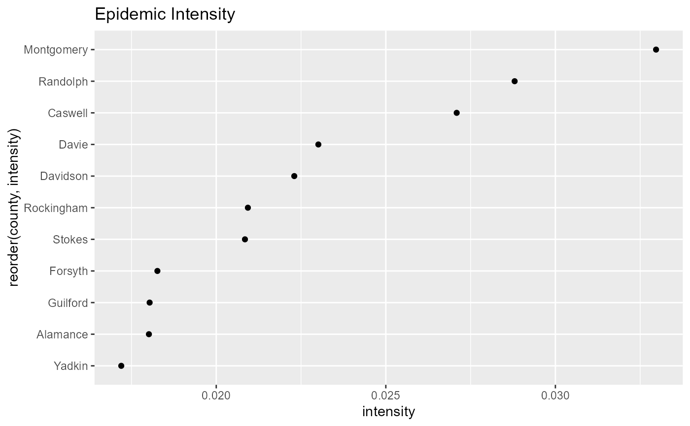

calculate_shannon.RdCalculate Shannon Index for a Series
calculate_shannon(incidence)
| incidence | numeric, the case incidence |
|---|
double, the intensity of epidemic calculated via Shannon index
#>#>#> #>#> #> #>#> #> #>library(ggplot2) counties <- unique(dat$county) entropy_values = dat %>% group_by(county) %>% dplyr::group_split() %>% lapply( function(x) calculate_shannon(incidence = x$cases_daily) ) %>% unlist()#>entropy_values = data.frame(county = counties, intensity = entropy_values) entropy_values %>% filter(county %in% nccovid::triad_counties) %>% ggplot(aes(reorder(county,intensity), intensity))+ geom_point()+ coord_flip()+ labs( title = "Epidemic Intensity" )